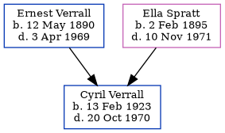

Cyril Ernest Verrall 1923 - 1970
[ Home ] | [ Calendar ] | [ Surnames Index ] | [ Family History ]The eldest of 5 children of Ernest Verrall and Ella Spratt (a charwork), Cyril Verrall, the first cousin once-removed on the father's side of Nigel Horne, was born in Thanet, Kent, England on Feb 13, 19231,2. Like his father, he was a window cleaner.
Throughout his life, he lived on 74 Invicta Road, Margate, Kent, England on Sep 29, 19391 and in 1970 (the same place as his parents had been living on Sep 29, 1939).
He died on Oct 20, 1970 in Thanet2.
Parents
- Ernest Charles was born on May 12, 1890
- Ella was born on Feb 2, 1895
Citations
- 1939 Register - Findmypast (was the son of the head of the household)
- England & Wales deaths 1837-2007 - Findmypast
Media
Cyril Verrall - probate
1939 Register Transcription - TNA-R39-1756-1756B-015-18
1939 Register Transcription - TNA-R39-1756-1756B-015-17
England & Wales births 1837-2006 - BMD/B/1923/1/AZ/001441/145
England & Wales deaths 1837-2007 - BMD/D/1970/4/AZ/001244/091
Family Tree
Generated by Ged2Site. Last updated on Jul 20, 2025